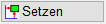
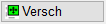

")
")
Vordefinierte Querschnitt-Konstruktionen für automatisierte Bewehrung (Streifenfundamente, U-Schalen, Wandanschlüsse etc.). Öffnet den Dialog Querschnitt zur Auswahl einer Querschnittsdarstellung.
Verwendung
·Automatische Erzeugung kompletter Detaildarstellungen (Konstruktion und/oder Bewehrung).
·Automatische Bewehrung vorhandener Querschnitt-Konstruktionen.
Beträgt die Bauteiltiefe weniger als die max. Stablänge, wird ein entsprechender Eisenauszug gezeichnet. Wird die max. Stablänge überschritten, wird die Längsbewehrung als lfdm unter Berücksichtigung der Übergreifungslängen erzeugt. |
Vorgehensweise
Nach Auswahl der gewünschten Querschnitt-Konstruktion kann die Bewehrung konfiguriert und als Voransicht in die Zeichnung eingefügt werden (Dialog Querschnittseingabe). Die exakte Platzierung erfolgt durch Koordinateneingabe oder per Mausklick in der Zeichnung.
» Querschnittseingabe (Dialog)
1.Querschnitt wählen
Verfügbare Querschnitte werden im Dialog Querschnitt angezeigt.
§Klicken Sie auf die gewünschte Querschnitt-Konstruktion.
Der Dialog Querschnittseingabe wird geöffnet. Die Optionen auf den Registerkarten Geometrie, Bügel und Längseisen sind abhängig vom gewähltem Querschnitt.
2.Maße angeben oder übernehmen
Führen Sie einen der folgenden Schritte durch:
a)Geben Sie die benötigten Daten ein und bestätigen Sie jeweils mit der Eingabetaste.
b)Übernehmen Sie die Maße direkt aus der Zeichnung (Auswahl der Methode unter Maße):
§Klicken Sie in das gewünschte Eingabefeld, (z. B. b= Breite). §Wählen Sie unter Maße (unterhalb der Skizze) die gewünschte Methode.
§Klicken Sie in der Zeichnung die entsprechenden Elemente an. Der aus der Zeichnung ermittelte Wert wird in das Eingabefeld übernommen. ISBCAD wechselt automatisch in das nächste Eingabefeld. Hinweis: Achten Sie beim Fangen von Punkten auf die Darstellung der Fangmarke und darauf, die Anfangs- und Endpunkte von Linien zu fangen, und nicht etwa die Eckpunkte von Füllungen. Andernfalls kann das Maß nicht ermittelt werden. Siehe auch: Elementfang
|
3.Darstellung einrichten
§Um die Geometrie zu zeichnen:
Aktivieren Sie die Option Schalkante erzeugen.
§Um die Auszüge verschieben zu können:
Aktivieren Sie die Option Auszüge verschieben.
§Geben Sie den Maßstab für die Detailzeichnung/-bewehrung ein.
Der vorgeschlagene Wert entspricht dem übergeordneten Zeichnungsmaßstab.
§Um die Querschnittszeichnung vor der endgültigen Platzierung zu prüfen:
-Klicken Sie auf . -Der Dialog wird ausgeblendet, die Voransicht wird als Rahmen an den Cursor gehängt. -Platzieren Sie den Rahmen für die Voransicht per Mausklick in der Zeichnung. [Rechteck verschieben]. Der Dialog wird wieder eingeblendet. Sie können die Angaben noch editieren. |
4.Detail in der Zeichnung platzieren
§Klicken Sie auf  .
.
Der Dialog wird geschlossen, die Detailzeichnung wird als Rahmen an den Cursor gehängt. Über die Optionen im Funktionsbereich können Sie die Art der Platzierung wählen:
|
Die geometrischen Elemente werden in Folie 0, die Auszüge in Folie 17 und die Verlegungen und Positionierungen in Folie 4 abgelegt. |
|
Platzierung auf einer anderen, vorhandenen oder neu anzulegenden, Folie. (Öffnet den Dialog Neue Folie). |
  |
Setzen: Genaue Platzierung, z. B. um die Bewehrung exakt in einer vorhandenen Geometrie zu platzieren. An der unteren linken Ecke auf der Position der Schalkanten wird ein Hilfspunkt gesetzt. Die Detailzeichnung kann im Folgenden an der Geometrie ausgerichtet werden. Versch: Beliebige Platzierung. Die Querschnittzeichnung kann an beliebiger Stelle platziert, aber nicht weiter ausgerichtet werden. |
|
Ein- und Ausschalten des Differenzmodus. Der aktuelle Modus ist durch die aktive Schaltfläche gekennzeichnet. |
|
Plotfläche einstellen (wenn für die Querschnitt-Zeichnung zusätzlicher Platz benötigt wird). Öffnet den Dialog Plotfläche. |


§Platzieren Sie die Detailzeichnung per Mausklick in der Zeichnung. [Rechteck verschieben].
Bei beliebiger Platzierung [Versch] §Bestätigen Sie die korrekte Platzierung mit oder Rechtsklick. [Korrektur]. Die Bearbeitung ist abgeschlossen. ISBCAD wechselt in das Formstahlmenü. Bei genauer Platzierung [Setzen] An der unteren linken Ecke, auf der Position der Schalkanten, wird ein Hilfspunkt gesetzt. Die Detailzeichnung kann im Folgenden an der Geometrie ausgerichtet werden. §Folgen Sie den Abfragen:
§Bestätigen Sie die korrekte Platzierung mit oder Rechtsklick. [Korrektur]. Die Bearbeitung ist abgeschlossen. ISBCAD wechselt in das Formstahl-Menü. |
Zugehörige Referenzen: